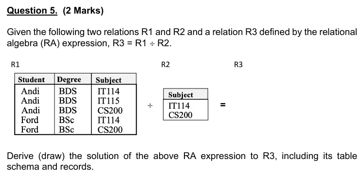
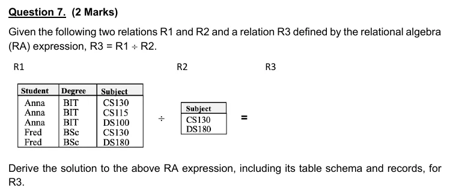
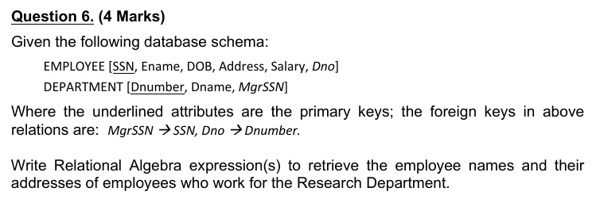
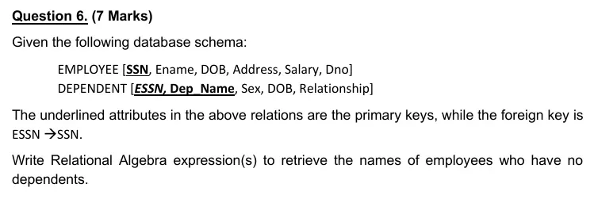
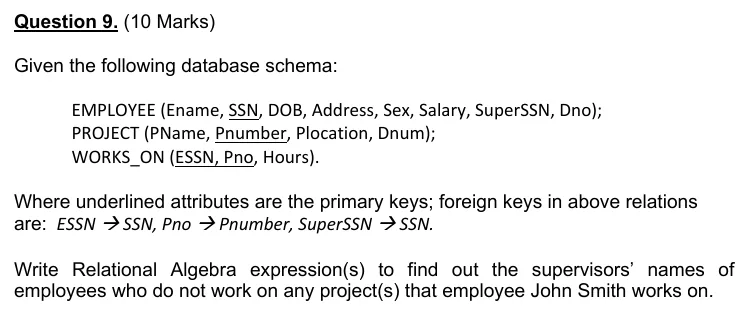
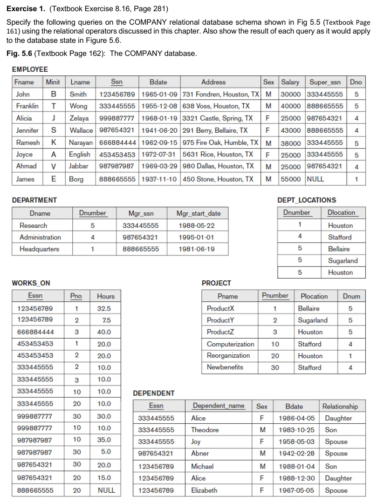
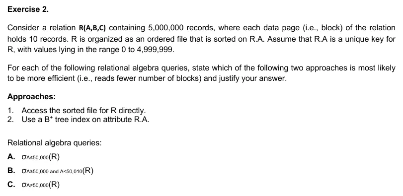
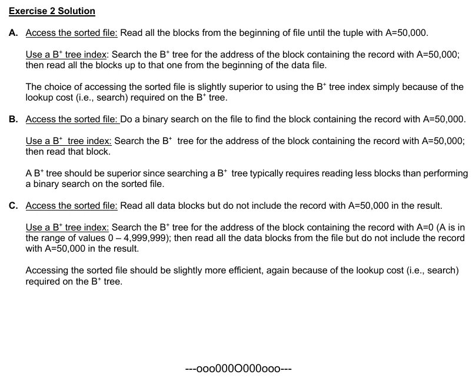

第 6 章 · WEEK 7 · RELATIONAL ALGEBRA
关系代数 RA
Week 7 整节课：八个运算符，以及考试的三种句型：普通连接、“没有”、“所有”。
1 Relational Algebra 是什么
SQL 是 declarative（声明式）的：你只说要什么结果，DBMS 决定怎么做。Relational Algebra（RA）是 procedural（过程式）的：表达式本身规定了运算的先后顺序，也就是“怎么做”。每一句 SQL 查询都会被 DBMS 翻译成 RA 表达式再执行，所以上一章的查询优化是在 RA 上做的。
RA 的运算对象是 relation（表），结果也是 relation，所以运算可以一层套一层。RA 只管查询，不管插入、删除、更新。
| 来自集合论 | 符号 | 为关系数据库专门设计 | 符号 |
|---|---|---|---|
| Union 并 | ∪ | Select 选行 | σ |
| Intersection 交 | ∩ | Project 选列 | π |
| Difference 差 | − | Join 连接 | ⋈ |
| Cartesian product 笛卡尔积 | × | Division 除 | ÷ |

这一章的例子都用课件的 COMPANY 数据库：
EMPLOYEE [Ename, SSN, DOB, Address, Sex, Salary, SuperSSN, Dno] DEPARTMENT [Dname, Dnumber, MgrSSN, MgrStart] PROJECT [PName, Pnumber, Plocation, Dnum] WORKS_ON [ESSN, Pno, Hours] DEPENDENT [ESSN, Dep_Name, Sex, DOB, Relationship] DEPT_LOCS [Dnumber, Dlocation]
2 Select σ 和 Project π
σ条件(R)：从 R 里挑出满足条件的行，列不变。条件里可以用 =、≠、<、>、≤、≥ 和 and、or、not。
σ Dno = 4 (EMPLOYEE) 部门 4 的员工的全部信息 σ Salary > 30000 (EMPLOYEE) 工资高于 30,000 的员工 σ (Dno = 4 and Salary > 25000) or (Dno = 5 and Salary > 30000) (EMPLOYEE)
π列名(R)：只保留指定的列。结果里重复的行会被去掉，因为 relation 是集合。
π Ename, DOB, Salary (EMPLOYEE) 每个员工的姓名、生日、工资 π Dno, Salary (EMPLOYEE) 每个部门发的各种工资（相同的 (Dno, Salary) 只留一行）
3 分步写：赋值和改名
复杂的查询有两种写法：嵌套成一个大表达式，或者分步写，把中间结果用 ← 存到一个临时 relation 里。考试两种都可以，分步写不容易错，课件的例题也都是分步写的。
一步写： π Ename, Salary ( σ Dno = 5 (EMPLOYEE) )
分步写： DEP5_EMPS ← σ Dno = 5 (EMPLOYEE)
RESULT ← π Ename, Salary (DEP5_EMPS)
赋值时可以顺便给列改名，在名字后面的括号里写新列名：
RESULT(Employee, DOB) ← π Ename, DOB (EMPLOYEE)
改名的主要用途是让两张表的列名一致，后面才能做 natural join 或集合运算。
4 集合运算：∪、∩、−
三个运算都要求两个 relation 是 union compatible：列数相同，并且对应列的 domain（取值范围）相同。列名不需要相同。
| 运算 | 结果 | 课件例子 |
|---|---|---|
| R1 ∪ R2 | 在 R1 或 R2 里出现的行（重复的去掉） | 有 dependent 或者参加了项目的员工的 ESSN： πESSN(DEPENDENT) ∪ πESSN(WORKS_ON) |
| R1 ∩ R2 | 在 R1 和 R2 里都出现的行 | 有 dependent 并且参加了项目的： πESSN(DEPENDENT) ∩ πESSN(WORKS_ON) |
| R1 − R2 | 在 R1 里但不在 R2 里的行 | 有 dependent 但没有参加项目的： πESSN(DEPENDENT) − πESSN(WORKS_ON) |
WORKS_ON ∪ DEPENDENT 是不合法的：一个 3 列，一个 5 列，不 union compatible。所以上面的例子都先用 π 投影到同一列 ESSN。
细化讲解
运算的性质（课件第 35–39 页）
- ∪ 和 ∩ 满足交换律和结合律：A ∪ B = B ∪ A，(A ∪ B) ∪ C = A ∪ (B ∪ C)。
- − 不满足：A − B ≠ B − A，(A − B) − C ≠ A − (B − C)。
- 优先级从高到低：比较运算符（=、< 等）→ not → and → or → σ、π → ×、⋈、−、∪、∩。同级从左到右，括号可以改变顺序。
优先级的例子（课件第 37 页）：“男性，并且（工资低于 40,000 或者在部门 5）”要写成 σSex='M' and (Salary<40000 or Dnum=5)。去掉括号就变成“（男性并且工资低于 40,000）或者在部门 5”，把部门 5 的女员工也选进来了。
De Morgan 定律：not (p and q) ≡ (not p) or (not q)；not (p or q) ≡ (not p) and (not q)。例子：“既不在 Brisbane、也不归部门 4 管的项目”有三种等价写法：
π Pname ( σ not(Plocation = 'Brisbane') and not(Dnum = 4) (PROJECT) ) π Pname ( σ not(Plocation = 'Brisbane' or Dnum = 4) (PROJECT) ) π Pname ( σ Plocation ≠ 'Brisbane' and Dnum ≠ 4 (PROJECT) )
5 Cartesian Product ×
R1 × R2：把 R1 的每一行和 R2 的每一行配对。R1 有 n 列 r 行，R2 有 m 列 t 行，结果有 n + m 列，r × t 行。不要求 union compatible。
× 本身没什么意义（把不相关的行也配到了一起），后面要跟一个 σ 把真正相关的行挑出来。课件例 14“列出每个女员工的 dependent 的名字”：
FEMALE_EMPS ← σ Sex = 'F' (EMPLOYEE) EMP_NAMES ← π Ename, SSN (FEMALE_EMPS) EMP_DEPEND ← EMP_NAMES × DEPENDENT ACTUAL_DEP ← σ SSN = ESSN (EMP_DEPEND) RESULT ← π Ename, Dep_Name (ACTUAL_DEP)
“× 之后跟 σ”这两步合起来就是 join。
6 Join ⋈
Join 把两张表里相关的行拼成一行。信息分散在几张表里时就要用它。
| 种类 | 写法 | 特点 |
|---|---|---|
| Theta-join | R1 ⋈A θ B R2 | 连接条件可以用 =、≠、<、≤、>、≥ 里的任何一个 |
| Equi-join | R1 ⋈A = B R2 | 条件只用 =。结果里 A 和 B 两列都保留。最常用 |
| Natural join | R1 * R2 | 自动在两张表同名的列上做等值连接，不用写条件；重复的那一列只留一个 |
| Outer join | 左外 ⟕、右外 ⟖ | 配不上的行也保留，缺的部分填 NULL。普通的 join（inner join）会把配不上的行丢掉 |
Equi-join（课件例 16：每个部门的经理的名字） DEPT_MGR ← DEPARTMENT ⋈ MgrSSN = SSN EMPLOYEE RESULT ← π Ename (DEPT_MGR) Theta-join（课件例 15：对每个员工，列出工资比他高的员工） A ← EMPLOYEE, B ← EMPLOYEE RESULT ← π A.Ename, B.Ename ( A ⋈ A.Salary < B.Salary B )
细化讲解
Natural join 的两个课件例子
例 17：DEPARTMENT [Dname, Dnumber, MgrSSN, MgrStart] * DEPT_LOCS [Dnumber, Dlocation]。同名的列只有 Dnumber，在它上面连接。结果 schema 是 (Dname, Dnumber, MgrSSN, MgrStart, Dlocation)，Dnumber 只出现一次。
例 18：EMPLOYEE * DEPARTMENT：这两张表没有同名的列（EMPLOYEE 里叫 Dno、SSN，DEPARTMENT 里叫 Dnumber、MgrSSN），所以连不出想要的结果。而
EMP(MgrSSN, Dnumber) ← π SSN, Dno (EMPLOYEE) RESULT ← EMP * DEPARTMENT
改名之后有两个同名列，natural join 要求两个都相等：这个员工既在这个部门，又是这个部门的经理。结果是“在自己部门当经理的员工”。
说明例 18 课件只提了问题，没有给文字答案，上面是我的分析。
Outer join（课件第 53–55 页）
- Left outer join：左边表里配不上的行也保留。例 19：列出所有员工和他们的部门（没有部门的员工也要列出来）：EMPLOYEE ⟕Dno=Dnumber DEPARTMENT。
- Right outer join：右边表里配不上的行也保留。例 20：列出每个员工和他的上司（没有上司的也列）：EMP ⟖SuperSSN=SSN EMPLOYEE。
课件里外连接的符号是在 ⋈ 的一侧加方括号。
7 Division ÷：“所有”的查询
R1 ÷ R2 回答的是：R1 里哪些对象，和 R2 里的每一个值都配过对？
- 结果的列 = R1 的列去掉 R2 的列。
- 要求：R2 的列必须是 R1 的最后几列，而且列名相同。
- 结果的行：把 R1 按“剩下的列”分组；某一组里如果 R2 的每个值都出现了，这一组就进结果。
下面是课件第 57 页的例子。勾选 R2 里放哪些 Subject，看结果怎么变：
课件的三个结果（官方答案，工具的输出已用程序核对）：R2 = {CS114, CS115} 时结果是 (Anna, BIT)；R2 = {CS114, CS180} 时是 (Anna, BIT) 和 (Fred, BSc)；R2 = {CS115, CS180} 时是 (Anna, BIT)。
真题：2024 Q5 和 2025 Q7（各 2 分）


程序生成的答案2024 Q5 和 2025 Q7
2024 Q5：R2 = {IT114, CS200}。
Andi 有 IT114 和 CS200，Ford 也都有。R3 的 schema 是 (Student, Degree)，记录是 (Andi, BDS) 和 (Ford, BSc)。
2025 Q7：R2 = {CS130, DS180}。
Anna 有 CS130 但没有 DS180，不满足。Fred 两个都有。R3 的 schema 是 (Student, Degree)，记录只有 (Fred, BSc)。
答题时画出 R3 的表：表头 Student、Degree，下面写记录。题目要求 “including its table schema and records”，表头不能漏。
用 ÷ 写查询（课件例 21、24）
句子里出现 all、every（“参加了所有……的”）就用 ÷。固定三步：
例 24：找出参加了部门 5 管的所有项目的员工的名字 ① 除数：要“全部配上”的那些值（只留一列） DEPT5_PROJS(Pno) ← π Pnumber ( σ Dnum = 5 (PROJECT) ) ② 被除数：（对象, 值）的配对（除数的列放最后，列名一致） EMP_PROJ(SSN, Pno) ← π ESSN, Pno (WORKS_ON) ③ 相除，再连回去取名字 RESULT_EMP_SSNS ← EMP_PROJ ÷ DEPT5_PROJS RESULT ← π Ename (RESULT_EMP_SSNS * EMPLOYEE)
注意第 ② 步要先 π 掉 Hours。如果不去掉，结果的列会是 (ESSN, Hours)，意思变成“同一个工时数配上了所有项目”，就错了。
细化讲解
例 21：找出参加了 John Smith 参加的所有项目的员工的名字 SMITH ← σ Ename = 'John Smith' (EMPLOYEE) SMITH_PNOS ← π Pno ( WORKS_ON ⋈ ESSN = SSN SMITH ) SSN_PNOS ← π ESSN, Pno (WORKS_ON) SSNS(SSN) ← SSN_PNOS ÷ SMITH_PNOS RESULT ← π Ename (SSNS * EMPLOYEE)
÷ 可以用基本运算表示（课件第 63 页）
设 R 的列是 (Y, X)，S 的列是 (X)：
T1 ← π Y (R) 所有候选对象 T2 ← π Y ( (S × T1) − R ) “应该有但实际没有”的配对，对应的对象就是不合格的 R ÷ S ← T1 − T2 候选的 − 不合格的
S × T1 是“每个对象都配上每个值”的理想情况；减去 R（实际有的配对）剩下的就是缺的配对。
完备集（课件第 60–62 页）
{σ, π, ∪, −, ×} 是一个 complete set：其他运算都能用这五个表示，∩、⋈、÷ 只是为了方便。
- R ∩ S = (R ∪ S) − ((R − S) ∪ (S − R))
- R ⋈条件 S = σ条件(R × S)
- Natural join = 改名 → × → σ（同名列相等）→ π（去掉重复的列）
8 怎么把一句话写成 RA
课件第 59 页的步骤，整理成四个问题：
- 最后要输出什么？→ 最外层的 π。
- 条件是什么，落在哪张表上？→ 对那张表先做 σ。
- 涉及哪几张表，它们靠哪个外键连起来？→ ⋈（写清楚连接条件）。
- 句子里有没有“没有 / 不”或者“所有 / 每一个”？→ 有“没有”用 −，有“所有”用 ÷。
| 句型 | 关键词 | 套路 |
|---|---|---|
| 普通连接 | who work for…, list … of … | σ 筛选 → ⋈ 连接 → π 输出 |
| “没有” | no, not, do not, without | 全部的 − 有的，再连回去取名字 |
| “所有” | all, every | (对象, 值) ÷ (值)，再连回去取名字 |
| “或者” | either … or | 分别求两部分，用 ∪ |
| “并且（两个身份）” | both … and, who also | 分别求两部分，用 ∩ |
9 课件的综合例题（两道是真题原题）
例 22 = 2024 Q6：Research 部门员工的名字和地址

官方答案课件 Week 7 第 66 页（Exercise 22）
RESEARCH_DEPT ← σ Dname = 'Research' (DEPARTMENT) RESEARCH_DEPT_EMPS ← RESEARCH_DEPT ⋈ Dnumber = Dno EMPLOYEE RESULT ← π Ename, Address (RESEARCH_DEPT_EMPS)
讲解：输出是 Ename、Address，在 EMPLOYEE 里。条件 “Research” 是部门名，在 DEPARTMENT 里。两张表靠 Dno = Dnumber 连。先筛出 Research 这一个部门，再连接，最后投影。写成一行也可以：πEname, Address(σDname='Research'(DEPARTMENT) ⋈Dnumber=Dno EMPLOYEE)。
例 26 = 2025 Q6：没有 dependent 的员工的名字

官方答案课件 Week 7 第 70 页（Exercise 26）
ALL_EMPS ← π SSN (EMPLOYEE) EMPS_WITH_DEPS(SSN) ← π ESSN (DEPENDENT) EMPS_WITHOUT_DEPS ← ALL_EMPS − EMPS_WITH_DEPS RESULT ← π Ename (EMPS_WITHOUT_DEPS * EMPLOYEE)
讲解：“no dependents” 是“没有”句型。全部员工的 SSN 减去有 dependent 的员工的 SSN。两边都只留一列，才 union compatible；ESSN 改名成 SSN，最后才能和 EMPLOYEE 做 natural join 取出名字。
常见错误：写成 σSSN ≠ ESSN(EMPLOYEE × DEPENDENT)。这选出的是“和某个 dependent 不匹配”的配对，只要数据库里有别人的 dependent，每个员工都会被选出来。“没有”不能用 ≠ 表达，必须用 −。
细化讲解
其余四道
例 23（两次连接）：先筛出 Ipswich 的项目，连到管它的部门（Dnum = Dnumber），再连到部门经理（MgrSSN = SSN），最后投影出项目号、部门号、经理的姓名、地址、生日。
例 24（÷）：见第 7 节。
例 25（∪）：“Smith 作为员工参加的项目”和“Smith 作为部门经理所管部门的项目”分别求出项目号，再 ∪。
例 27（∩）：部门经理的 SSN ∩ 有 dependent 的员工的 SSN，再和 EMPLOYEE 连接取名字。“至少有一个”不需要特别处理：只要在 DEPENDENT 里出现过就是至少有一个。
10 真题：2023 Q9（10 分）

AI 讲解，非官方2023 Q9：拆成四步
这句话套了三层：John Smith 的项目 → 参加了这些项目的员工 → 没参加的员工 → 他们的上司。从里往外一层一层写。
① John Smith 参加的项目 SMITH ← σ Ename = 'John Smith' (EMPLOYEE) SMITH_PNOS ← π Pno ( WORKS_ON ⋈ ESSN = SSN SMITH ) ② 至少参加了其中一个项目的员工 ON_SMITH_PROJS(SSN) ← π ESSN ( WORKS_ON * SMITH_PNOS ) ③ 一个都没参加的员工 = 全部 − ② NOT_ON(SSN) ← π SSN (EMPLOYEE) − ON_SMITH_PROJS ④ 这些员工的上司的名字 SUPERS(SSN) ← π SuperSSN ( NOT_ON * EMPLOYEE ) RESULT ← π Ename ( SUPERS * EMPLOYEE )
每一步的理由：
- ② 里 WORKS_ON * SMITH_PNOS 在同名列 Pno 上做 natural join，留下的是 Smith 的项目上的所有工作记录。
- ③ “do not work on any” 是“没有”句型，用 −。两边都是单列 SSN。
- ④ 先取出这些员工的 SuperSSN，改名成 SSN，再和 EMPLOYEE 连接，这时连上的是上司本人那一行，取他的 Ename。
没把握的地方没有官方答案。两处有解释空间：John Smith 自己不在 NOT_ON 里（他参加了自己的项目）；没有参加任何项目的员工算“不参加 Smith 的项目”，会被包含进来，这符合题目的字面意思。没有上司的员工 SuperSSN 是 NULL，第 ④ 步连接时自然被丢掉。
11 例题：Tutorial 7 Exercise 1

Tutorial 用的是教材的 schema，名字拆成 FNAME、LNAME，表名是 WORKS_ON、DEPT_LOCATIONS。d、g、h 需要聚合运算，官方说明跳过。下面每题先自己写，再看答案。答案都是官方原文（Tut07-RA-2026.pdf 第 3–5 页），讲解是我加的。
官方答案a) 部门 5 里每周在 ProductX 项目上工作超过 10 小时的员工
EMP_W_X ← (σ PNAME = 'ProductX' (PROJECT)) ⋈ PNUMBER = PNO WORKS_ON EMP_WORK_10 ← EMPLOYEE ⋈ SSN = ESSN (σ HOURS > 10 (EMP_W_X)) RESULT ← π LNAME, FNAME (σ DNO = 5 (EMP_WORK_10))
结果：Smith John；English Joyce。讲解：普通连接句型，三个条件分别落在三张表上：项目名在 PROJECT，工时在 WORKS_ON，部门在 EMPLOYEE。
官方答案b) 有一个和自己同名（first name）的 dependent 的员工
E ← EMPLOYEE ⋈ SSN = ESSN and FNAME = DEPENDENT_NAME DEPENDENT RESULT ← π LNAME, FNAME (E)
结果为空。讲解：连接条件可以有两个，用 and 连起来。
官方答案c) 直接上司是 Franklin Wong 的员工
WONG_SSN ← π SSN (σ FNAME = 'Franklin' and LNAME = 'Wong' (EMPLOYEE)) WONG_EMPS ← EMPLOYEE ⋈ SUPERSSN = SSN WONG_SSN RESULT ← π LNAME, FNAME (WONG_EMPS)
结果：Smith John；Narayan Ramesh；English Joyce。讲解：EMPLOYEE 和自己连接。先找出 Wong 的 SSN，再找 SUPERSSN 等于它的员工。
官方答案e) 参加了每一个项目的员工
PROJ_EMPS(SSN, PNO) ← π ESSN, PNO (WORKS_ON) ALL_PROJS(PNO) ← π PNUMBER (PROJECT) EMPS_ALL_PROJS ← PROJ_EMPS ÷ ALL_PROJS RESULT ← π LNAME, FNAME (EMPLOYEE * EMPS_ALL_PROJS)
结果为空。讲解：“every” 是“所有”句型，用 ÷。和课件例 24 一样，只是除数换成全部项目。
官方答案f) 不参加任何项目的员工
ALL_EMPS ← π SSN (EMPLOYEE) WORKING_EMPS(SSN) ← π ESSN (WORKS_ON) NON_WORKING_EMPS ← ALL_EMPS − WORKING_EMPS RESULT ← π LNAME, FNAME (EMPLOYEE * NON_WORKING_EMPS)
结果为空。讲解：“没有”句型，和 2025 Q6 完全同构，把 DEPENDENT 换成 WORKS_ON。
细化讲解
官方答案i) 至少参加一个 Houston 的项目，但所在部门在 Houston 没有办公地点的员工
E_P_HOU(SSN) ← π ESSN (WORKS_ON ⋈ PNO = PNUMBER (σ PLOCATION = 'Houston' (PROJECT))) D_NO_HOU ← π DNUMBER (DEPT_LOCATIONS) − π DNUMBER (σ DLOCATION = 'Houston' (DEPT_LOCATIONS)) E_D_NO_HOU ← π SSN (EMPLOYEE ⋈ DNO = DNUMBER D_NO_HOU) RESULT_EMPS ← E_P_HOU ∩ E_D_NO_HOU RESULT ← π LNAME, FNAME, ADDRESS (EMPLOYEE * RESULT_EMPS)
结果：Wallace Jennifer，291 Berry, Bellaire, TX。讲解：两个条件各求一个 SSN 集合，“但”就是同时满足，用 ∩。第二个条件里“没有 Houston 地点的部门”又是一个“没有”句型：全部部门 − 有 Houston 地点的部门。
官方答案j) 没有 dependent 的部门经理
DEPT_MANAGERS(SSN) ← π MGRSSN (DEPARTMENT) EMPS_WITH_DEPENDENTS(SSN) ← π ESSN (DEPENDENT) RESULT_EMPS ← DEPT_MANAGERS − EMPS_WITH_DEPENDENTS RESULT ← π LNAME, FNAME (EMPLOYEE * RESULT_EMPS)
结果：Borg James。讲解：“没有”句型，只是“全部”换成了“全部经理”。
Tutorial 7 Exercise 2：直接读有序文件，还是用 B+ 树

官方答案Tutorial 7 Exercise 2 Solution

讲解：A（A ≤ 50,000）和 C（A ≠ 50,000）都要从文件头开始读一大片，B+ 树帮不上忙，反而多了查树的几次 I/O，所以直接读文件略好。B（一个很窄的范围）要先定位到 A = 50,000：在文件上二分要读 log2(500,000) ≈ 19 个块，B+ 树只要读树高那么多个块，所以用索引更好。
12 进阶变式题
RA 表达式没法用本站的程序自动验证（除了 ÷ 的求值）。下面的答案是手工推导的，都标为非官方；每道题都是从课件或 tutorial 的官方答案改一步得到的，我写明了改的是哪一步。
变式 1 “没有” + 条件
找出部门 5 里不参加任何项目的员工的名字。
AI 讲解，非官方变式 1
DEPT5_EMPS ← π SSN ( σ Dno = 5 (EMPLOYEE) ) WORKING_EMPS(SSN) ← π ESSN (WORKS_ON) RESULT_SSNS ← DEPT5_EMPS − WORKING_EMPS RESULT ← π Ename (RESULT_SSNS * EMPLOYEE)
从 Tutorial 7 的 f) 改来：只把“全部员工”换成“部门 5 的员工”。减数不用限制在部门 5。
变式 2 “所有” + 条件
找出参加了所有位于 Brisbane 的项目的员工的名字和工资。
AI 讲解，非官方变式 2
BRIS_PROJS(Pno) ← π Pnumber ( σ Plocation = 'Brisbane' (PROJECT) ) EMP_PROJ(SSN, Pno) ← π ESSN, Pno (WORKS_ON) RESULT_SSNS ← EMP_PROJ ÷ BRIS_PROJS RESULT ← π Ename, Salary (RESULT_SSNS * EMPLOYEE)
从课件例 24 改来：除数的筛选条件从 Dnum = 5 换成 Plocation = 'Brisbane'，最后多输出一列 Salary。
细化讲解
变式 3 “没有”和“所有”套在一起
找出没有 dependent、并且参加了 John Smith 参加的所有项目的员工的名字。
AI 讲解，非官方变式 3
（一）参加了 Smith 所有项目的员工：课件例 21 SMITH ← σ Ename = 'John Smith' (EMPLOYEE) SMITH_PNOS ← π Pno ( WORKS_ON ⋈ ESSN = SSN SMITH ) ALL_SMITH(SSN) ← π ESSN, Pno (WORKS_ON) ÷ SMITH_PNOS （二）没有 dependent 的员工：课件例 26 NO_DEPS ← π SSN (EMPLOYEE) − π ESSN (DEPENDENT) （三）两个条件同时满足 RESULT ← π Ename ( (ALL_SMITH ∩ NO_DEPS) * EMPLOYEE )
两个子问题分别是课件的例 21 和例 26，各得到一个单列的 SSN 集合，“并且”用 ∩。（二）里右边的 ESSN 列和左边的 SSN 列名不同，但 domain 相同，所以 union compatible；结果沿用左边的列名 SSN。这个结果会包含 John Smith 自己（如果他没有 dependent）。
切换到“细化讲解”可以看到变式 3、Tutorial 7 的其余题目和课件的其余例题。
13 本章小结
- SQL 是声明式的，说要什么；RA 是过程式的，说怎么做。SQL 查询可以翻译成 RA 表达式。
- RA 的运算作用在 relation 上，结果也是 relation。
- 八个运算：σ、π、∪、∩、−、×、⋈、÷。其中 {σ, π, ∪, −, ×} 是完备集。
- ∪、∩、− 要求 union compatible。
- 考试三种句型：普通连接；“没有”用 −；“所有”用 ÷。
14 小测
键盘：← → 在小节之间翻页。